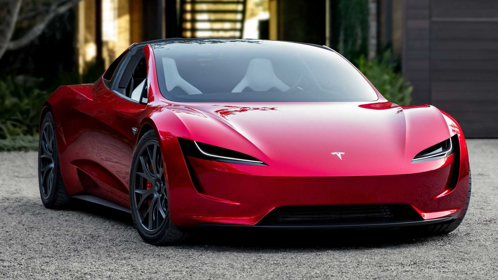

Tesla has come a long way in designing its cars since it introduced the Roaster in the late 2000s. That car changed perceptions of what an electric car could be. It was fast, good-looking, and fun, but it was completely unwieldy, somewhat uncomfortable, and could only seat two adults. It was also based on a Lotus chassis, so it was important for Tesla to create a custom design for its first appropriate car, and this was the Model S that arrived in 2012 and put Tesla on a path that enabled it to dominate The full control over electric vehicle sales in the United States, which delivered more than 360,000 vehicles in 2019
Tesla was the first automaker to use batteries containing thousands of small, cylindrical commodity lithium-ion cells like those used in consumer electronics. Tesla uses a version of these cells designed to be cheaper to manufacture and lighter than standard cells by removing some safety features; According to Tesla, these features are redundant due to the advanced thermal management system and the bulging chemical in the battery to prevent fires. Tesla chassis used on Model S and Model X, with battery view Batteries are placed under the car floor, which saves interior and trunk space but increases the risk of battery damage due to debris or collision.
The Tesla can stop at traffic lights and stop lights, make automatic lane changes, and automatically steer on any road even off highways. In addition, the latest Tesla models include 8 external cameras, 12 ultrasonic sensors and an internal computer with powerful features for added security.